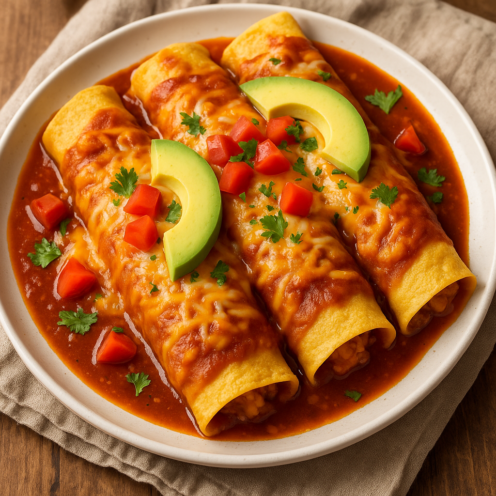

Enchiladas de Guadalajara

Description
Enchiladas de Guadalajara are a comforting, flavorful dish from the heart of Jalisco, known for their vibrant red salsa, tender shredded chicken, and rich toppings. These enchiladas bring the bold essence of traditional Mexican cooking into your kitchen with a recipe that is both simple and satisfying.
Perfect for family dinners or casual gatherings, these enchiladas are smothered in homemade red chile sauce, filled with juicy chicken, and topped with crumbled cheese, chopped onions, and a touch of crema. Ready in under an hour, this dish is sure to become a favorite!
Ingredients
- 3 lbs chicken (bone-in or boneless, for shredding)
- 12 corn tortillas
- 4 dried guajillo chiles, stemmed and seeded
- 2 garlic cloves
- 1/4 white onion
- 1 cup chicken broth
- 1/2 tsp ground cumin
- 1/2 tsp Mexican oregano
- Salt to taste
- Vegetable oil (for frying)
- 1/2 cup crumbled queso fresco or cotija cheese
- 1/4 cup chopped white onion (for garnish)
- Mexican crema or sour cream (optional)
- Sliced avocado or radishes (optional for serving)
Preparation Steps
- Cook the chicken: Boil the chicken in salted water until fully cooked (about 30 minutes). Shred and set aside. Reserve the broth.
- Make the salsa: Simmer the guajillo chiles in hot water for 10 minutes. Blend with garlic, onion, cumin, oregano, salt, and about 1 cup of reserved broth until smooth.
- Fry the tortillas: Lightly fry each tortilla in oil for a few seconds per side until soft and pliable. Drain on paper towels.
- Dip and fill: Dip each tortilla into the warm chile sauce, fill with shredded chicken, and roll tightly.
- Plate and garnish: Arrange the enchiladas on a plate. Spoon extra salsa on top, then garnish with crumbled cheese, chopped onion, and a drizzle of crema.
- Serve warm: Optionally serve with avocado slices, radishes, or a side of beans and rice for a complete meal.
Home